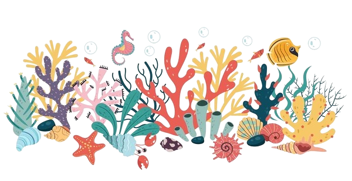
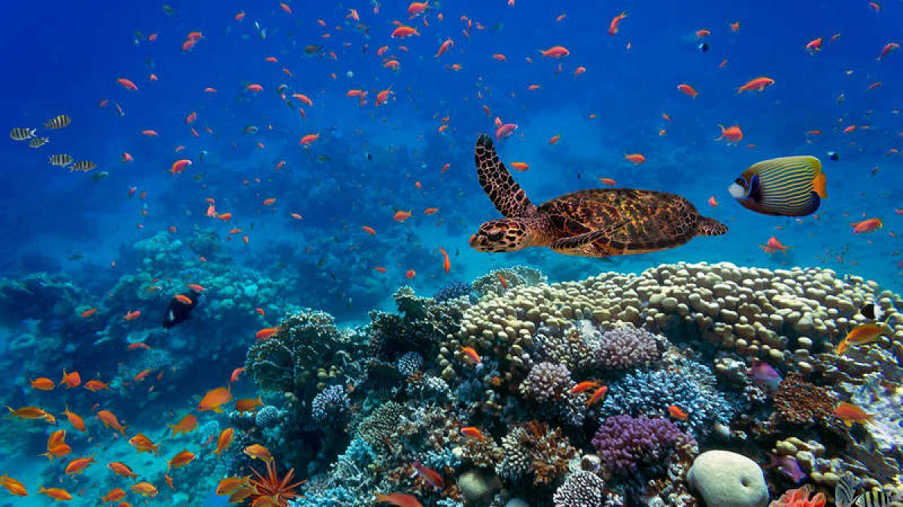
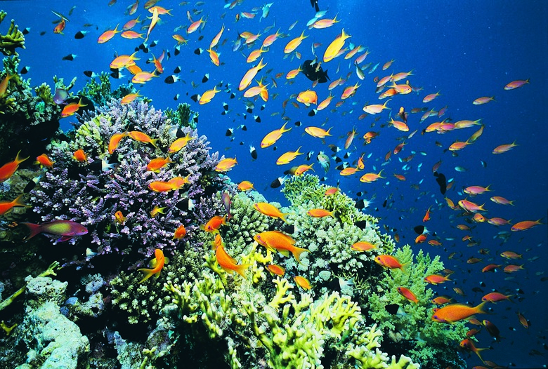
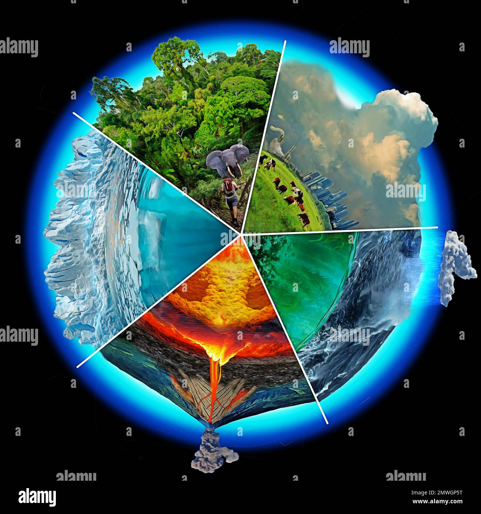

Meet the Coral Council
Welcome to the vibrant heart of our marine biology community — the Coral Council! These brilliant minds are the guardians of knowledge, the mentors of future ocean explorers, and the guiding lights beneath the waves. With expertise as deep as the sea and a passion for discovery, they’ve helped shape the tides of learning and innovation.
From decoding dolphin chatter to nurturing coral conservation efforts, each member of the Coral Council brings a unique spark to our academic reef. Get to know the educators who make waves — both in the classroom and out at sea.
Dive into the Unkown
Beneath the shimmer of the waves lies a world bursting with wonder — a living tapestry of color, movement, and mystery. Marine Biology is your compass to this hidden realm, where glowing jellyfish drift like lanterns, coral reefs hum with life, and ancient sea creatures still roam the depths.
As a marine biologist in the making, you won’t just study the ocean — you’ll listen to its rhythms, protect its fragile beauty, and unlock its secrets one discovery at a time. So take a deep breath, grab your curiosity, and dive in the ocean is waiting for you.
This is your home page. Edit it whatever you like.
This is your home page. Edit it whatever you like.
This is your home page. Edit it whatever you like.
What is BS in Marine Biology?
A Bachelor of Science in Marine Biology is an undergraduate degree focused on the study of marine life and ocean ecosystems. It combines biology, oceanography, ecology, chemistry, and environmental science to explore the rich diversity of organisms that inhabit our seas — from microscopic plankton to massive whales, and everything in between. Students in this program gain hands-on experience through lab work, field research, and even dives into coastal or deep-sea environments.
Why is Marine Biology Important?
The ocean covers over 70% of our planet, supports nearly all life on Earth, and plays a crucial role in regulating climate, producing oxygen, and feeding billions of people. Studying marine biology is essential because:
It helps us understand and protect marine ecosystems threatened by pollution, climate change, and overfishing.
 It contributes to medical and scientific discoveries, such as new antibiotics or sustainable food sources.
It deepens our understanding of Earth’s climate systems and how human activity affects them. In short: Marine biology is at the heart of ocean conservation and the health of our planet.
Explore the Digital Reef
Welcome to the Digital Reef — a vibrant hub where science, stories, and creativity come to life! Dive into a colorful ecosystem of media content, from ocean documentaries and faculty features to behind-the-scenes dev moments and quirky sea-worthy memes.
Just like a real reef, this space is full of surprises — rich with knowledge, teeming with inspiration, and always evolving. So swim around, click through, and discover the pulse of our marine-minded community, one byte at a time.